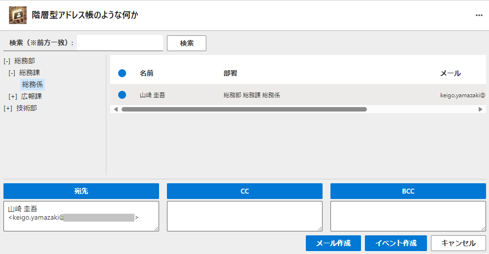

AddrTree:階層型アドレス帳のような何か について
AddrTree:階層型アドレス帳のような何か について

本アプリは現状のまま提供され、不具合その他動作の保証は一切いたしません。
展開方法
- Microsoft 365 管理センター https://admin.microsoft.com/ を開く
- 「設定」の「統合アプリ」の「カスタムアプリをアップロード」をクリック
- アプリの種類「Teamsアプリ」で app.zip をローカルに保存したものをアップロードして「次へ」
- 展開するアプリで「階層型アドレス帳のような何か」が表示されたら「次へ」
- ユーザを追加で「特定のユーザまたはグループ」あるいは「組織全体」などをお好みで指定して「次へ」
- 「アクセス許可を承認する」をクリック
- ポップアップで管理者としてログインし、User.Read.Allのユーザ委任アクセスを「承諾」して「次へ」
- 「展開の完了」をクリック
by Keigo YAMAZAKI (@ymzkei5)